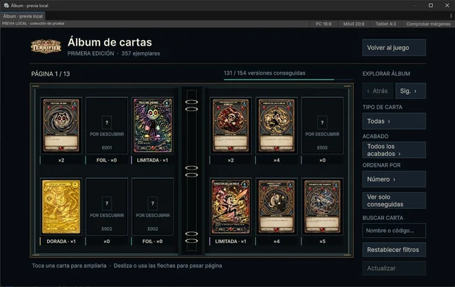
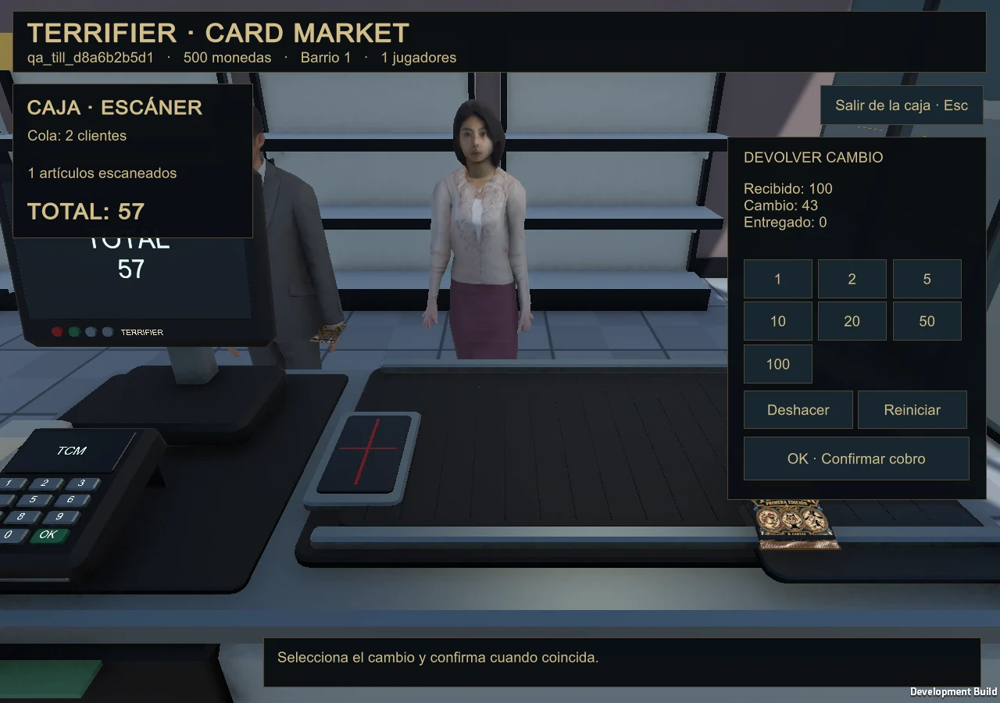
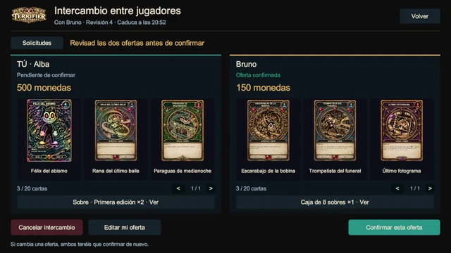

An album of 266 designs
Every pack holds six cards. Explore the First Edition, Forest and Harbor collections and look for foil, full-art and limited variants.
Multiplayer card shop simulator
Serve customers, crack open packs of cartoon horrors and challenge your friends with a deck you built yourself.
Free to play · Online multiplayer · PC & Android
Set prices, scan the goods and ring up your customers.

Summon monsters, set traps and save mana for your next move.
Test match captured in the game engine.
Every pack holds six cards. Explore the First Edition, Forest and Harbor collections and look for foil, full-art and limited variants.

Visit a friend’s shop, compare offers and trade cards and coins. You can also bid on cards in the player market.
Open the official Google Play listing, install the game and sign in to enter your shop.
Google PlayDownload the ZIP, extract the entire folder and open TerrifierCardMarket.exe.
Windows and Android share a server. Add friends through Community to visit their shops and trade cards.
An Internet connection is required. Your shop and collection are saved on the server.